Why Every Campaign Should Start With a Question
The mindset shift from reporting metrics to asking the right analytical questions, and how that one change transforms campaign outcomes.
Read More →A Marketing Analytics graduate passionate about combining creativity, strategy, and customer insights to build meaningful brand experiences.

Building brands through creativity, strategy, analytics, and customer understanding.
Brand Management • Digital Marketing • Marketing Analytics • Content Strategy • Social Media • Customer Experience
I started as a graphic designer. That's where I learned to actually look at things: what makes a visual work, what makes it forgettable, why some choices feel right before you can explain why. When I moved into marketing, I brought that eye with me. I'm not the person who briefs the designer and waits. I build the thing, then I measure it, then I rebuild it better.
I think the best marketers are the ones who can't turn off the part of their brain that notices everything. Why did that post travel? Why did this email get opened and that one didn't? What made someone stop on that ad for three seconds longer than the last one? I've been asking those questions for years, long before I had a job title that said I should.
That curiosity eventually led me to marketing analytics, where creativity and data come together. I care about work that actually does something, not just looks good in a deck. I'm in Chicago, actively looking, and I genuinely love talking to people who care about this stuff the same way I do.
"Great marketing isn't about selling products. It's about making people feel understood."
Understanding people before creating campaigns.
Creative work should solve a business problem.
Data tells us what happened. Customers tell us why.
"I don't just create marketing. I understand why it works."
"Great marketing isn't about getting attention. It's about giving people a reason to care."
"Creativity catches attention. Strategy earns trust."
"Data explains what happened. Curiosity helps us discover why."
Multichannel campaigns across social, email, and search, with a focus on QA, timelines, and performance reporting that actually means something.
From content calendars to copywriting and branded assets, building content systems that keep audiences engaged and algorithms on my side.
On-page optimization, keyword research, and Google Search Console to grow organic traffic in ways that compound over time.
GA4, SEMrush, and platform analytics to build KPI dashboards that turn raw numbers into strategy you can actually act on.
Instagram, LinkedIn, and Facebook end to end, scheduling, community engagement, and data-informed content planning.
Mailchimp and HubSpot campaigns from audience segmentation and A/B testing through automation and performance analysis.
Brand Marketing, Digital Marketing, Social Media, Customer Success, Growth Marketing, and Marketing Coordinator roles.
I started as a graphic designer before moving into marketing, so I build the creative myself, then measure it, then rebuild it, instead of briefing a designer and waiting.
Building KMG's "Marketer's Nexus" symposium identity from scratch, sponsorship proposal included, and watching it turn into 13.7K+ impressions and real event attendance.
Chicago, IL, and open to relocating for the right role.
Trends I'm tracking and thinking about right now
Updated this month
Hover a discipline to see where I've applied it
Social media and content highlights
Director of Social Strategy · Sept 2025–June 2026
Event campaigns, symposium promos, thought leadership graphics, motion graphics, Mailchimp newsletters to 200+ members.
Marketing Coordinator · Sept 2025–June 2026
Flyers, static posts, carousel posts, social graphics, motion graphics, email campaigns, A/B tested messaging.
Five projects, told the way I actually think about them
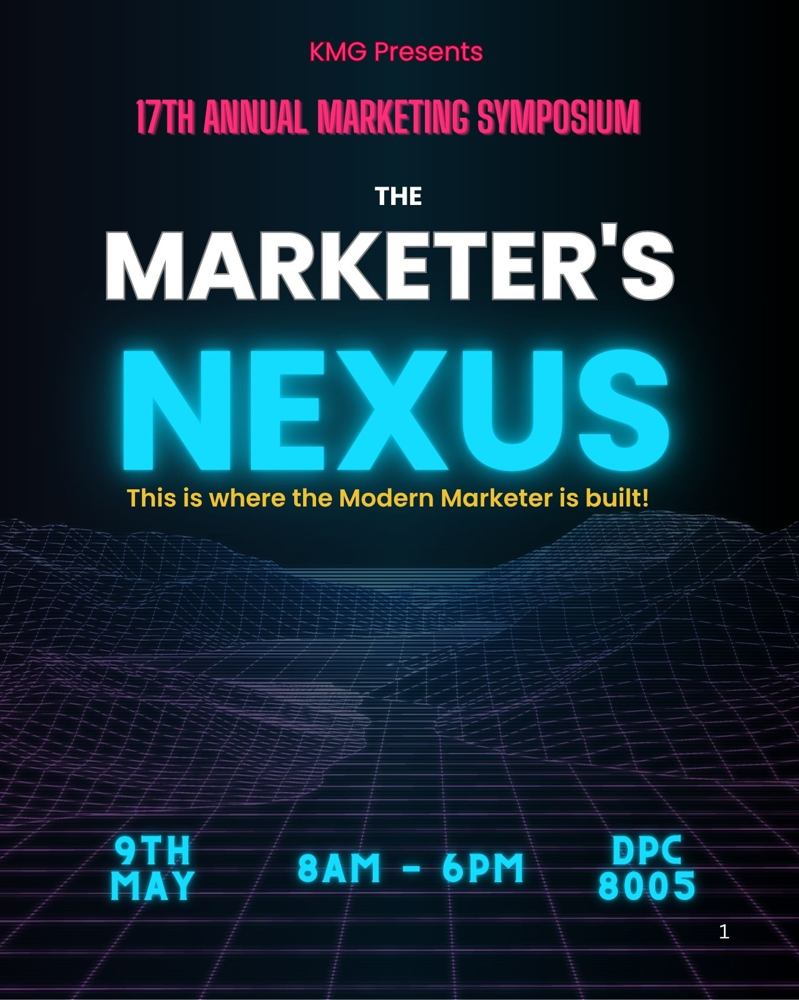
KMG is a graduate marketing student organization at DePaul, and like most student orgs, the social presence was inconsistent. Posts went up when someone remembered. There was no real strategy, no consistent voice, and the accounts weren't doing much to grow membership or drive event attendance.
My role was Director of Social Strategy, and the job was bigger than just posting more often. It was about making KMG visible as an organization, building a brand that people actually wanted to associate with, and driving real attendance to events all year. Not just the account, but the organization itself.
The biggest project of the year was the annual KMG symposium. We were the ones who named it the Marketer's Nexus. That name came from our team. We decided it, built the event identity around it, and put together a full sponsorship proposal to bring companies in as partners. I was coordinating with other teams throughout, following up to keep things moving, and showing up at every event to capture live content, videos and photos on the ground, so we had real material to work with, not just graphics. Analytics and PR were part of it too. I tracked what performed and made sure the right people knew who KMG was.
Most student org social accounts make the same mistake. They only post when there's an event to promote. That means your audience only hears from you when you want something from them. I wanted to fix that ratio. If we post five times and three of those are event promotions, we're asking too much and giving too little.
So I organized the content into three buckets: event content (pre, during, post, every event got its own arc), community content (marketing tips, insights, things people would actually save or share), and culture content (who KMG is, what it's like to be part of it). The ratio shifted. People started following because the account was worth following, not just because they wanted the event details.
I designed everything in Canva: static posts, motion graphics, event flyers, carousels, countdown content. For the Marketer's Nexus, I built a full campaign arc from the ground up. That included writing the sponsorship proposal we used to bring in company partners, which meant treating the event like a real marketing product. Teaser posts went out two weeks early. Countdown content kept the energy up the week before. On the day of, I was physically there with my phone, capturing video and photos, getting real content in real time instead of just scheduling graphics from a desk.
That applied to every event. Whether it was the Kellstadt Mixer, the International Student Success Panel, or a bonding night, I showed up and covered it. Real photos and videos, not stock. Post-event recaps that extended the conversation past the room. I also ran Mailchimp email campaigns to 200+ members alongside the social content so the messaging was consistent across channels, and I tracked performance to understand what was actually moving the needle.
I'd start building content earlier for the flagship event. I had good material but I was often working a week ahead instead of two or three. For the Marketer's Nexus specifically, starting the teaser campaign earlier would have given us more runway to build anticipation. I'd also lean more into Instagram Stories. We used them, but not consistently, and the data suggested they were working well when we did. More systematic, less reactive.
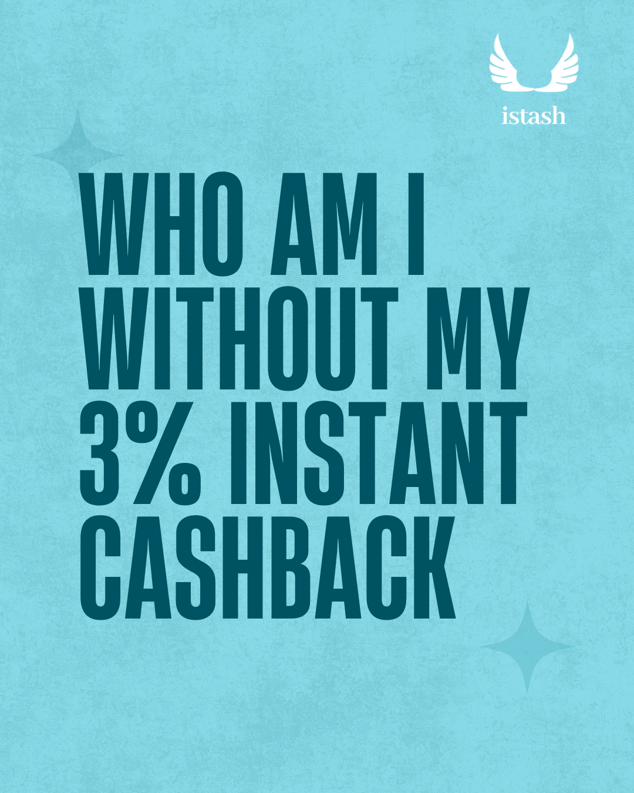
iStash is a digital payments startup. Zero-fee merchant wallet, built for small businesses in Chicago. When I came in, the product existed but the marketing didn't have a real system behind it. There was no clear content strategy, no consistent brand voice on social, and the sales pipeline needed work. The goal was to grow the brand, bring merchants onto the platform, and make people actually understand what iStash was and why it was worth using.
It was a startup, which meant my days looked nothing like a typical coordinator role. I was texting the founder in the morning, going out to meet merchants in person by afternoon, and designing assets in the evening. Everything was hands on and nothing waited.
A big part of the job was field marketing, which meant physically going out to businesses, talking to owners, explaining the product, and getting them onboarded. That kind of work teaches you something classroom marketing doesn't: you learn very fast what messaging works when you're standing in front of a real person who has three seconds to decide if this is worth their time.
Once merchants were onboarded, I built assets for them and for the iStash brand itself. Instagram was the main channel, with some LinkedIn. I handled everything: captions, static posts, carousels, flyers, motion graphics, promotional content. When we had an offer or a push, I built the whole campaign: the creative, the copy, the timing, the call to action.
Alongside the organic work, I was running paid campaigns on Google and Meta, running A/B tests on messaging, and tracking what was converting. When activation rates felt low, I went into the funnel and looked for where people were dropping off. That process of going from field to campaign to data and back again became the rhythm of the role.
I'd build more of a feedback loop between the field work and the content strategy. When I was out talking to merchants, I was hearing objections and questions that never made it back into the marketing in a systematic way. The things people asked me in person were exactly what should have been addressed in the social content and ads, but I wasn't capturing those insights formally. If I did it again, I'd keep a running log of what I heard in the field and use it to directly shape messaging. That's where the real audience research was happening.
Designed #CatchYourPixels as a UGC campaign and "The Pixel Effect" as a mini-series, grounded in audience targeting analysis.
Projected 25.6% market share growth through brand repositioning and an ecosystem bundling strategy.
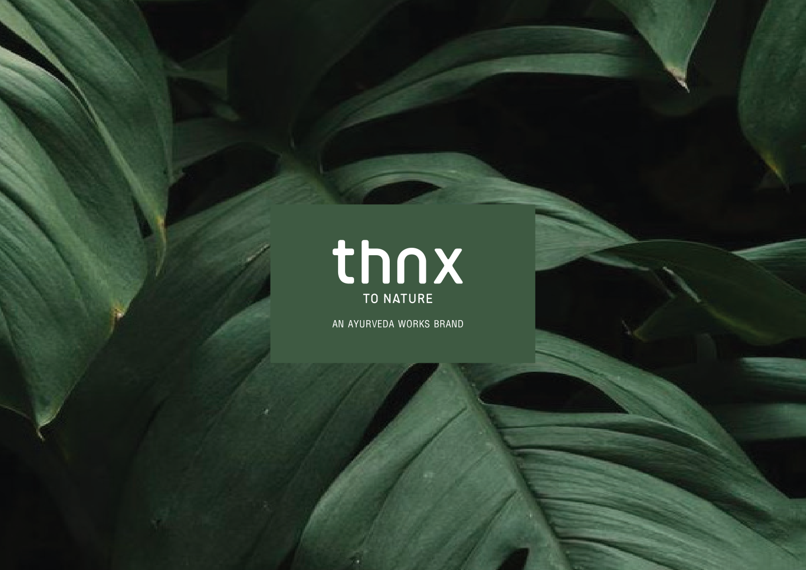
Designed brand identity systems, packaging, and print collateral for wellness and lifestyle clients while managing content and campaigns across 5+ accounts at once.
Grew organic client acquisition by 20% through content built to be useful, not keyword-stuffed.

Conceptualized a video-first rental discovery platform for students and young professionals in a $4T+ US rental market, combining short-form video with AI-powered search.
Designed natural language search, a scrollable apartment video feed, an agent portal, and a verified marketplace with built-in monetization. Built the GTM plan around independent agents and university communities.
Quick, honest ideas for brands I admire, not real client work, just how I think
I'd build a "Systems People Use" series featuring real users' weird, hyper-specific templates. The product's best marketing is showing how far people take it.
I'd lean into a "Made In Canva" spotlight on small businesses that built entire brands without a design team, proof, not just features.
I'd extend Wrapped into a quieter, quarterly version, smaller data moments that keep the emotional hook alive between Decembers.
I'd build local "Host Insight" reports so hosts see the same consumer behavior data the marketing team uses, turning hosts into better marketers themselves.
Small observations from real conversations, pulled from the work above
Talking to merchants in person surfaced objections no dashboard would've shown me. That's what actually shaped the messaging.
Watching where eyes actually went, not where I assumed they'd go, taught me emotion-forward creative can quietly bury the product it's selling.
Members didn't just want event graphics. They wanted to feel like the org saw them year-round, not just during symposium season.


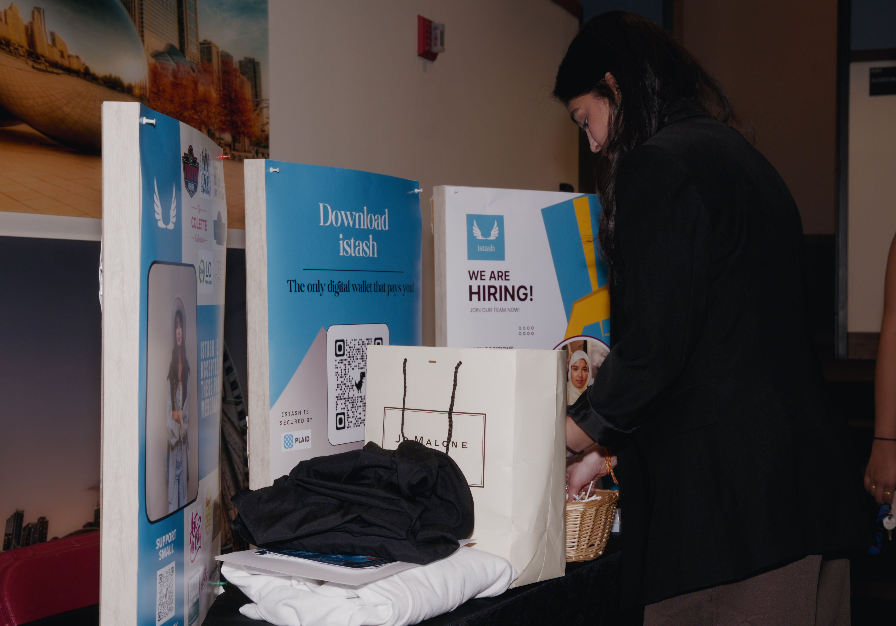
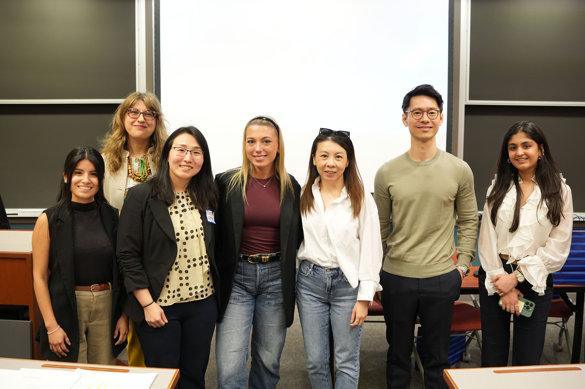
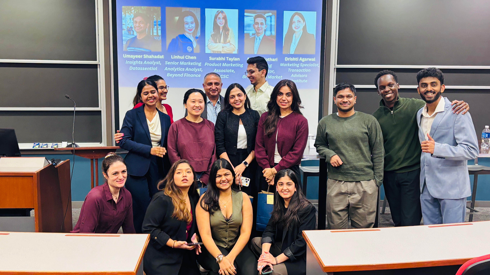

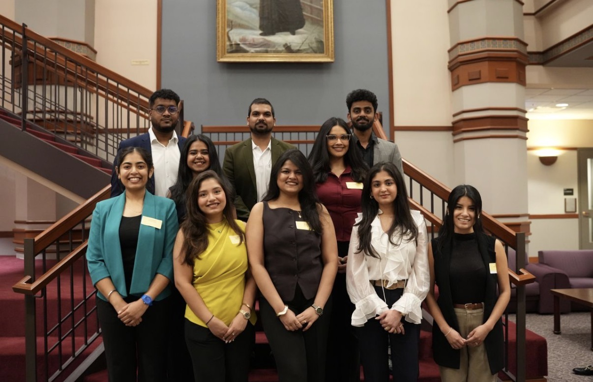

Where I analyze brands, campaigns, customer experiences, and marketing trends.
The mindset shift from reporting metrics to asking the right analytical questions, and how that one change transforms campaign outcomes.
Read More →How I built a sustainable posting cadence at KMG that drove 11% follower growth, and the tools that made it work consistently.
Read More →My eye-tracking research on McDonald's ads found that emotion-forward creative can overshadow the product entirely. Here's what the data revealed.
Read More →Lessons from managing SEO content for multiple client accounts at once, what worked, what didn't, and why consistency almost always wins.
Read More →High performing teams move fast because alignment is clear. A reflection on disciplined thinking and how scalable growth is built from the inside out.
Read More →New editions of The Marketing Edit publish regularly on LinkedIn, follow along for the next one.
Follow on LinkedIn →Marketing is no longer about the stuff you make, but about the stories you tell.Seth Godin
People don't buy what you do; they buy why you do it.Simon Sinek
Content is fire. Social media is gasoline.Jay Baer
Tested different value-prop messages against each other on Google and Meta campaigns.
+9% engagement liftRan email campaigns to 200+ members and learned subject lines matter more than almost anything else.
Higher open rates, fasterUsed iMotions to compare emotion-forward vs. product-forward creative and found the Vampire Effect at play.
Hybrid strategy recommendedPulled apart the acquisition funnel to find where people were dropping off, then fixed the gaps.
+8% activation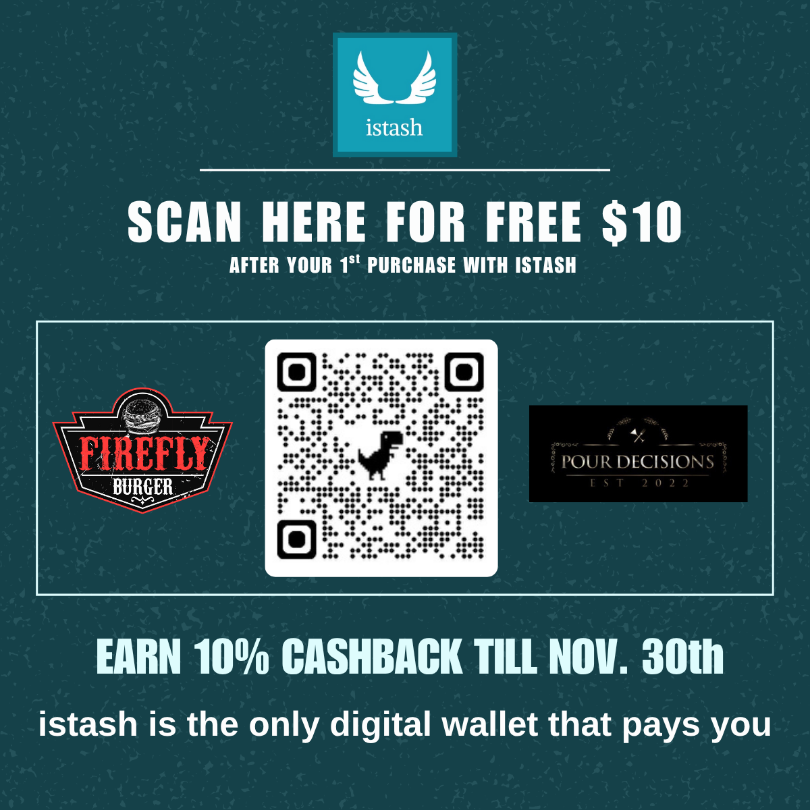
iStash · Flyer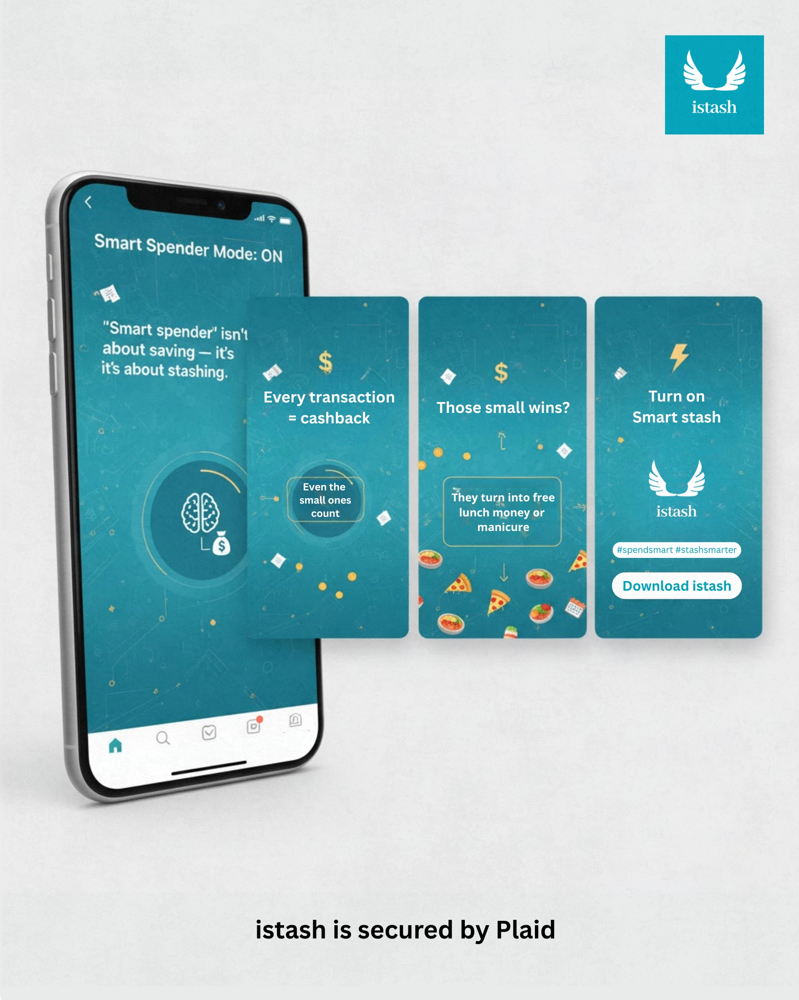
iStash · Carousel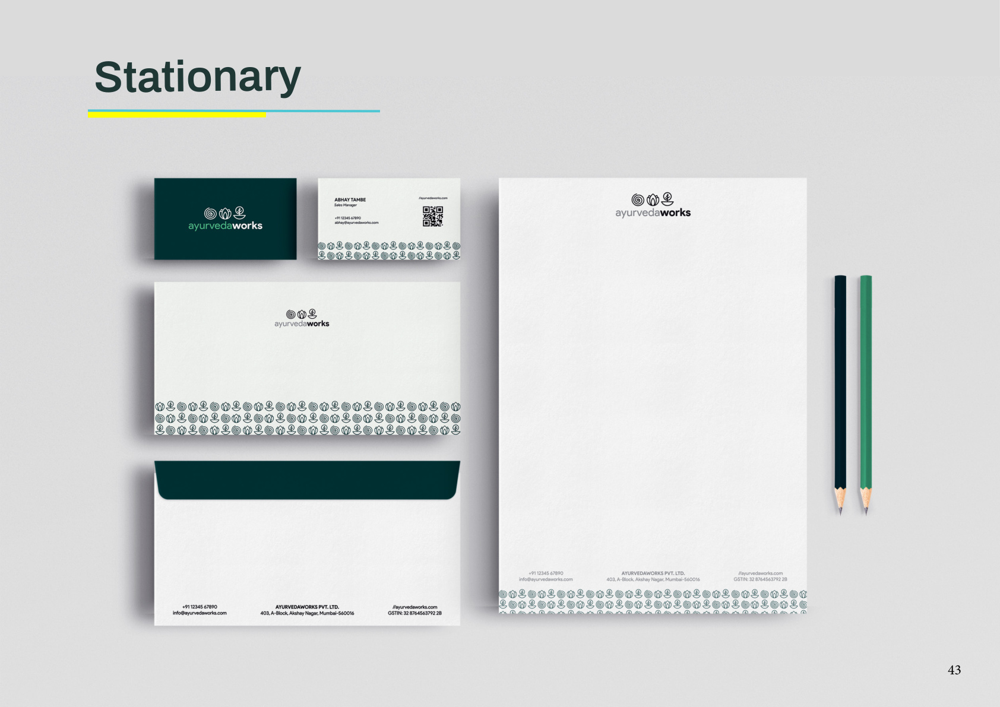
INIT · Branding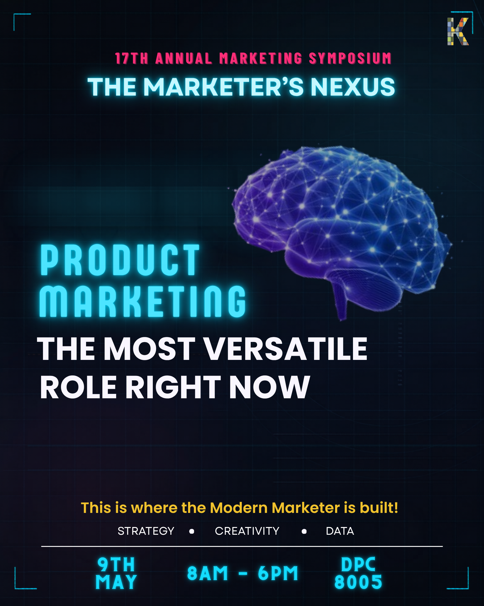
KMG · Social Graphic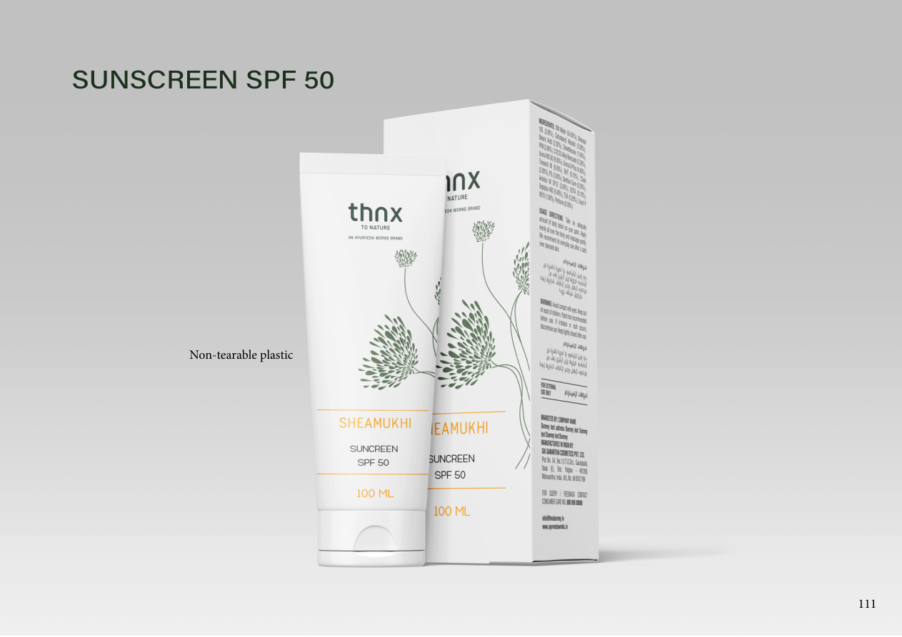
INIT · Packaging KMG · Event Promo
KMG · Event Promo KMG · Static Post
KMG · Static Post KMG · Static Post
KMG · Static Post KMG · Static Post
KMG · Static Post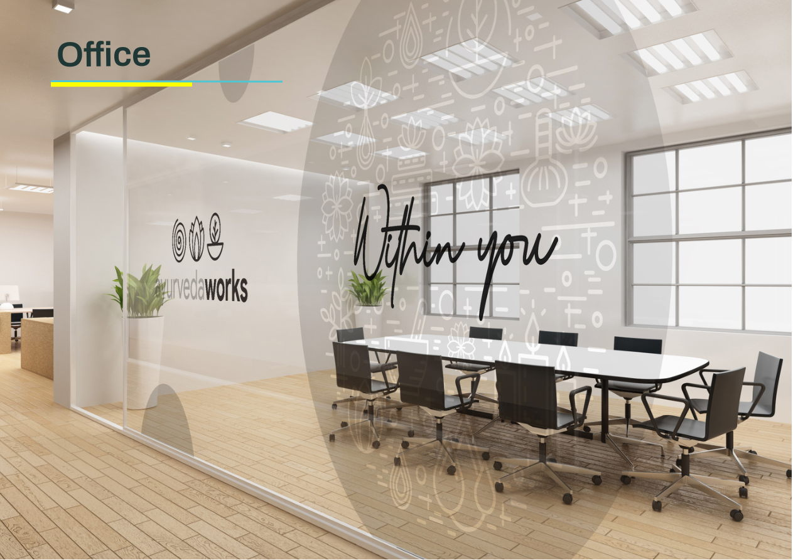
INIT · EnvironmentalRan campaigns across social, email, and search for a digital payments startup, from creative to conversion.
Planned and ran the social strategy for a graduate marketing org, including its annual symposium.
Ran paid campaigns and segmentation analysis for an established FMCG brand.
Handled content, campaigns, and brand assets across 5+ client accounts simultaneously.
First real taste of doing design and marketing at the same time, across 10+ brand accounts.
A few more that didn't make the featured case studies above
Full SWOT analysis of Netflix as a global streaming platform: strengths like global reach and recommendation algorithms, weaknesses like rising content costs, and threats from Disney+ and Amazon Prime.
📄 View DocumentRanked Netflix's critical business challenges and analyzed its value creation across original content, recommendation technology, and global distribution, proposing hybrid pricing and content formats.
📄 View DocumentAnalyzed how a 170+ year product sustained relevance through brand extension and packaging innovation, proposing e-commerce and B2B industrial cleaning opportunities.
📄 View PDFBroke down Peloton's segmentation and targeting of tech-savvy, fitness-conscious earners, and assessed its premium lifestyle positioning beyond just fitness equipment.
📄 View PDFAnalyzed the Mylan EpiPen pricing controversy and proposed solutions including price transparency, non-profit manufacturing models, and regulatory reform.
📄 View PDF[Add your sentence: how painting shapes the way you see color, composition, or patience in creative work.]
[Add your sentence: how travel, Ahmedabad to Mumbai to Chicago, shapes how you think about different audiences.]
[Add your sentence: how photography trains your eye for the same things you look for in a campaign visual.]
Best ideas happen at 11pm, coffee shops are where a lot of the early thinking happens before that.
I'm at the beginning of my marketing career, and I'm excited by opportunities that let me solve real business problems while staying close to customers. Whether it's building campaigns, strengthening communities, improving customer experiences, or analyzing performance, I want to grow into a marketer who can connect creative ideas with measurable business impact.
Every campaign starts with understanding people. If you're looking for someone who enjoys combining creativity, customer empathy, and analytics to build meaningful experiences, I'd love to connect.